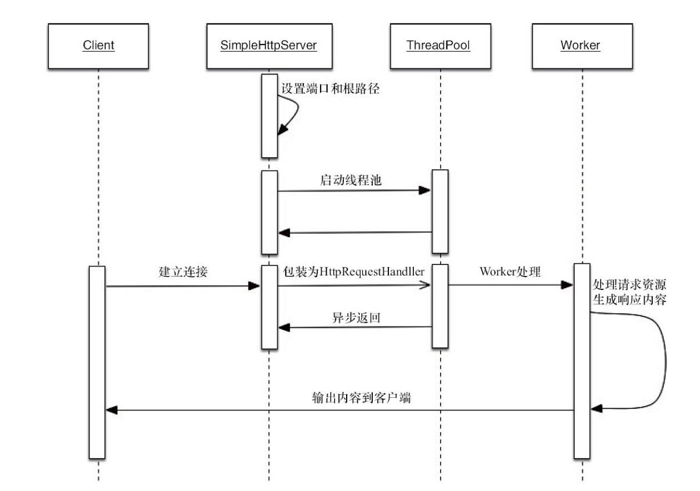

案例：基于线程池技术的简单Web服务器
线程池技术
ThreadPool (接口类)
- 客户端可以通过execute(Job)将Job提交入线程池执行，而客户端自身不用等待Job的执行完成
- 这里的工作者线程代表一个重复执行Job的线程
- 而每个客户端提交的Job豆浆进入到一个工作队列中等待工作者线程的处理
package test.ThreadPoolDemo;
/**
* @author xuzhihua
* @date 2019/2/23 11:58 AM
* 简单的线程池接口定义
*/
public interface ThreadPool<Job extends Runnable> {
// 执行一个job，这个job需要实现Runnable
void execute(Job job);
// 关闭线程池
void shutDown();
// 增加工作组线程
void addWorker(int num);
// 减少工作组线程
void removeWorker(int num);
// 得到正在等待执行的任务数量
int getJobSize();
}
DefaultThreadPool (实现类)
package test.ThreadPoolDemo;
import java.util.ArrayList;
import java.util.Collections;
import java.util.LinkedList;
import java.util.List;
import java.util.concurrent.atomic.AtomicLong;
/**
* @author xuzhihua
* @date 2019/2/23 12:02 PM
*/
public class DefaultThreadPool<Job extends Runnable> implements ThreadPool<Job> {
// 线程池最大限制数
private static final int MAX_WORKER_NUMBERS = 10;
// 线程池默认的数量
private static final int DEFAULT_WORKER_NUMBERS = 5;
// 线程池最小的数量
private static final int MIN_WORKER_NUMBERS = 1;
// 这是一个工作列表，将会向里面插入工作
private final LinkedList<Job> jobs = new LinkedList<Job>();
// 工作者列表
private final List<Worker> workers = Collections.synchronizedList(new ArrayList<Worker>());
// 工作者线程的数量
private int workerNum = DEFAULT_WORKER_NUMBERS;
// 线程编号生成
private AtomicLong threadNum = new AtomicLong();
public DefaultThreadPool() {
initializeWorkers(DEFAULT_WORKER_NUMBERS);
}
public DefaultThreadPool(int num) {
workerNum = num > MAX_WORKER_NUMBERS ? MAX_WORKER_NUMBERS : (num < MIN_WORKER_NUMBERS ? MIN_WORKER_NUMBERS : num);
initializeWorkers(workerNum);
}
@Override
public void execute(Job job) {
if (job != null) {
// 添加一个工作者，然后进行通知
synchronized (job) {
jobs.addLast(job);
jobs.notify();
}
}
}
@Override
public void shutDown() {
for (Worker worker:workers) {
worker.shutDown();
}
}
@Override
public void addWorker(int num) {
synchronized (jobs) {
// 限制新增的Worker数量不能超过最大值
if (num + this.workerNum > MAX_WORKER_NUMBERS) {
num = MAX_WORKER_NUMBERS - this.workerNum;
}
initializeWorkers(num);
this.workerNum += num;
}
}
@Override
public void removeWorker(int num) {
synchronized (jobs) {
if (num >= this.workerNum)
throw new IllegalArgumentException("beyond workNum");
// 按照给定的数量停止Worker
int count = 0;
while (count < num) {
Worker worker = workers.get(count);
if (workers.remove(worker)) {
worker.shutDown();
count ++;
}
}
this.workerNum -= count;
}
}
@Override
public int getJobSize() {
return jobs.size();
}
// 初始化线程工作者
private void initializeWorkers(int num) {
for (int i = 0; i < num; i++) {
Worker worker = new Worker();
workers.add(worker);
Thread thread = new Thread(worker, "ThreadPool-Worker-" + threadNum.incrementAndGet());
thread.start();
}
}
// 工作者，负责消费任务
class Worker implements Runnable {
// 是否工作
private volatile boolean running = true;
@Override
public void run() {
while (running) {
Job job = null;
synchronized (jobs) {
// 如果工作者列表是空的，那么就wait
while (jobs.isEmpty()) {
try {
jobs.wait();
} catch (InterruptedException e) {
// 感知到我补对WorkerThread的终端操作，返回
Thread.currentThread().interrupt();
return;
}
}
// 取出一个Job
job = jobs.removeFirst();
}
if (job != null) {
try {
job.run();
} catch (Exception e) {
// 忽略Job执行中的Exception
}
}
}
}
public void shutDown() {
running = false;
}
}
}
SimpleHttpServer (Web服务器)
SimpleHttpServer 时序图

package test.ThreadPoolDemo;
import java.io.*;
import java.net.ServerSocket;
import java.net.Socket;
/**
* @author xuzhihua
* @date 2019/2/23 12:23 PM
* 基于线程池技术的简单Web服务器
*/
public class SimpleHttpServer {
// 处理HttpRequest的线程池
static ThreadPool<HttpRequestHandler> threadPool = new DefaultThreadPool<>(1);
// SimpleHttpServer的根路径
static String basePath;
static ServerSocket serverSocket;
static int port = 8080;
public static void setPort(int port) {
if (port > 0) {
SimpleHttpServer.port = port;
}
}
public static void setBasePath(String basePath) {
if (basePath != null && new File(basePath).exists() && new File(basePath).isDirectory())
SimpleHttpServer.basePath = basePath;
}
// 启动SimpleHttpServer
public static void start() throws Exception {
serverSocket = new ServerSocket(port);
Socket socket = null;
while ((socket = serverSocket.accept()) != null) {
// 接收一个客户端Socket，生成一个 HttpRequestHandler， 放入线程池执行
threadPool.execute(new HttpRequestHandler(socket));
}
serverSocket.close();
}
static class HttpRequestHandler implements Runnable {
private Socket socket;
public HttpRequestHandler(Socket socket) {
this.socket = socket;
}
@Override
public void run() {
String line = null;
BufferedReader br = null;
BufferedReader reader = null;
PrintWriter out = null;
InputStream in = null;
try {
reader = new BufferedReader(new InputStreamReader(socket.getInputStream()));
String header = reader.readLine();
// 由相对路径计算出绝对路径
String filePath = basePath + header.split(" ")[1];
out = new PrintWriter(socket.getOutputStream());
// 如果请求资源的后缀为jpg或ico，则读取资源并输出
if (filePath.endsWith("jpg") || filePath.endsWith("ico")) {
in = new FileInputStream(filePath);
ByteArrayOutputStream baos = new ByteArrayOutputStream();
int i = 0;
while ((i = in.read()) != -1) {
baos.write(i);
}
byte[] array = baos.toByteArray();
out.println("HTTP/1.1 200 OK");
out.println("Server: molly");
out.println("Content-Type: image/jpeg");
out.println("Content-length: " + array.length);
out.println(" ");
socket.getOutputStream().write(array, 0, array.length);
} else {
br = new BufferedReader(new InputStreamReader(new FileInputStream(filePath)));
out = new PrintWriter(socket.getOutputStream());
out.println("HTTP/1.1 200 OK");
out.println("Server: molly");
out.println("Content-Type: text/html; charset=UTF-8");
out.println(" ");
while ((line = br.readLine()) != null) {
out.println(line);
}
}
out.flush();
} catch (Exception e) {
out.println("HTTP/1.1 500");
out.println(" ");
out.flush();
} finally {
close(br, in, reader, out, socket);
}
}
}
// 关闭流或者Socket
private static void close(Closeable... closeables) {
if (closeables != null) {
for (Closeable closeable : closeables) {
try {
closeable.getClass();
} catch (Exception e) {
e.printStackTrace();
}
}
}
}
}
测试方法
准备一个html文件
<html> <head> <title>测试页面</title> </head> <body> <h1>第一张图片</h1> <img src="1.jpg" /> <h1>第二张图片</h1> <img src="2.jpg" /> <h1>第三张图片</h1> <img src="3.jpg" /> </body> </html>将SimpleHttpServer的根目录设置到该HTML页面所在目录，并启动SimpleHttpServer
通过 ab(Apache HTTP Server benchmarking tool) 来测试不同线程数下， SimpleHttpServer的吞吐量表现